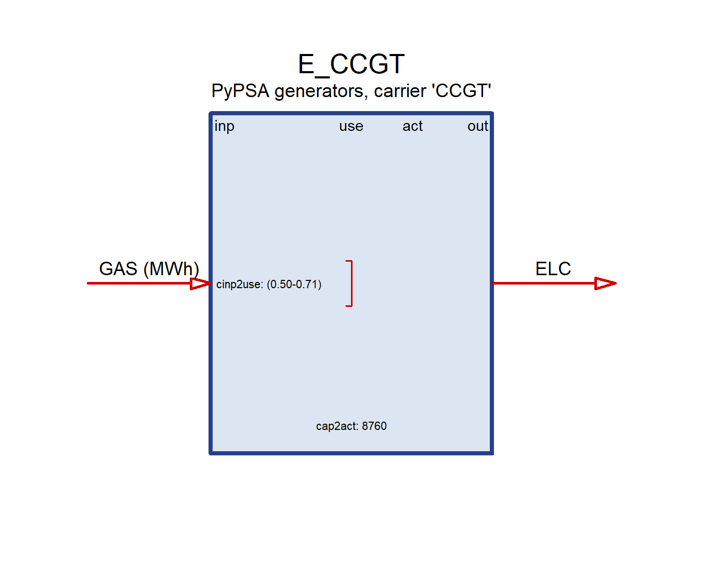
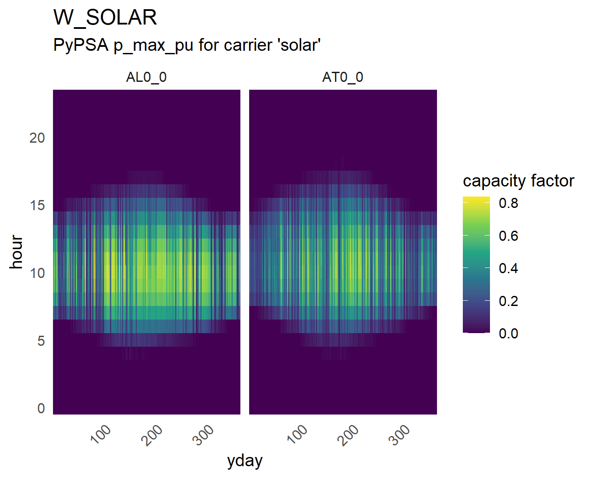

commodity demand storage supply technology trade weather
13 1 4 9 21 92 7 Rebuilding a Python power-sector model in an R model generator
PyPSA — Python
energyRt — R
Roughly 10 sets of constraints → roughly 100 pre-built ones.
That buys expandability. It costs model size. Both were the intent.
The comparison is a correctness check — not a benchmark, not a competition.
Not the first attempt: revaluation (2023) targeted energyRt and Switch. This version was completed with the help of AI — Claude, by Anthropic.
base_s_41_elec.nc PyPSA-Eur network (8,760 h, 41 nodes)
│
├─ pypsa_read() pure R, ncdf4 — no Python needed
├─ pypsa_model() → 147 energyRt objects, ~11 s
│
├─ interpolate_model(mod, cal4) sampled calendar
└─ solve_scen(..., julia_highs) 326k variables| PyPSA | energyRt |
|---|---|
Generator |
technology + weather |
Load |
demand |
Line (AC) / Link (DC) |
trade — KVL not reproduced |
Link (converter) |
technology (charger / discharger) |
StorageUnit / Store |
storage |
| carriers | commodity + supply |
detect · name · record · exclude — never clamp, never invent
| rule | severity | n |
|---|---|---|
link_zero_capacity |
blocker | 16 |
storage_subhourly_duration |
blocker | 1 |
storage_zero_duration |
blocker | 1 |
line_zero_impedance |
warning | 13 |
storage_multiyear_duration |
warning | 3 |
A model that silently clamped a 28-second pumped-hydro plant to half an hour would build, solve, and mean nothing.


Bright at midnight ⇒ the time mapping is wrong.
One AC bus, no lines, full 8,760-hour year. No network paradigm to argue about; no weighting convention to choose.
| energyRt | PyPSA | diff | |
|---|---|---|---|
| base | 8,260,626,305.45 | 8,260,626,305.45 | 0.00 |
| demand ×2 | 13,387,554,321.05 | 13,387,554,321.06 | 0.01 |
Capacity expansion under doubled demand: 31,162.8 MW built on both sides, every technology within 0.05 MW.
Full hourly year ≈ 28 M variables — no open solver will take it. Four representative days → 96 slices, 326 k variables, < 3 min.
| energyRt | 78,474,565,582 |
| PyPSA (transport) | 78,426,977,892 |
| difference | +0.0607% |
Every capacity to 4 decimals · demand exact · weather-driven generation to 8 significant figures.
PyPSA: flow follows impedance. energyRt trade: flow follows capacity.
| KVL | transport | gap | |
|---|---|---|---|
| copperplate (0 lines) | — | — | none possible |
| 41 nodes (77 AC lines) | 675,336,409 | 652,485,728 | 3.38% |
Transport is a relaxation — it can only be cheaper.
PyPSA scales opex by snapshot_weightings; capital is a full annual annuity regardless. On a sample PyPSA-Eur leaves the weighting at 1.
energyRt derives pTimesliceWeight = 1/year_fraction — it annualises.
Belgium, 168 h:
| weighting | objective | CO₂ | what runs |
|---|---|---|---|
| PyPSA’s (w=1) | 164,899,752 | 274,037 t | gas, nuclear, waste, oil |
| annualised (w=52.14) | 245,652,738 | 0 | H₂ only |
One convention apart — and one of them has no fossil fleet at all.
PyPSA: Store + Link (electrolyser) + Link (fuel cell) = 3 components
energyRt: one storage with three commodity roles — @input, @storage, @output
PyPSA rates a Link on its input bus; energyRt on activity.
162.058 MW × 0.6994 = 113.3434 = energyRt’s CHR_H2, to four decimals.
| rows | columns | after presolve | |
|---|---|---|---|
| energyRt | 349,557 | 326,345 | 78,688 × 115,820 |
| PyPSA | 207,673 | 102,332 | 51,022 × 81,624 |
3.2× the columns for identical physics · ~12× the time · ~3.8× the memory
Presolve deletes 64% of energyRt’s columns — they are definitional. vTechInp, vTechOut, vTechAct, vInpTot… are variables, not expressions.
That is why getData() can report any flow directly.
Cost
Benefit
A model built for one job beats a generator at that job. The generator earns its keep on the second job.
Handed to participants for further investigation. Finding something wrong is a useful outcome.
Two correct implementations of the same linear program should agree.
What was actually hard was pinning down three conventions —
— each invisible until you compare, and any one of which could have been mistaken for a modelling error.
energyRt · useR! Training